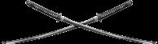

[1] Tiếng Nhật: Cảm ơn rất nhiều!
[2] Cổ sự kí: là tập hợp các thần thoại về nguồn gốc các vị thần của Nhật Bản, ảnh hưởng ít nhiều tới nghi lễ Thần đạo.
[3] Taiheiki và Heiki Monogatari là hai cuốn sử thi nổi tiếng của Nhật Bản.